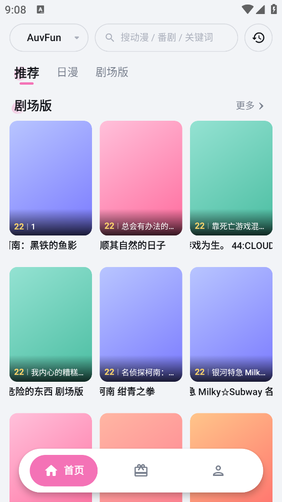

AuvFun 藏得最深的 4 个冷门设置，用之前真不知道它还能这样
从数据源排序自动兜底、多设备续播全参数恢复，到默认线路预设——这些被官方藏起来的隐藏功能能让你的追番体验脱胎换骨
你以为 AuvFun官网 上介绍的这个聚合番剧 APP，打开→播放→收藏三件套就没别的了？那是真没把它翻个底朝天。
说实话我之前也这么觉得，追番全靠手动点播放、源卡了才慢吞吞切线路，直到把设置菜单翻了不下十遍，才发现这货藏着好几个「官方都不宣传」的开关。藏得真深——入口要么埋在三级设置里，要么需要特定版本才解锁，不特意去扒真碰不到。
下面这四个，每一个都让我重新审视了 AuvFun 到底能做多贴心。
数据源拖拽排序：失效自动切下一个，懒人福音
这是我发现时最兴奋的一个。
大多数人知道播放页可以手动切线路，但很少人知道：设置里能给数据源拖拽排优先级——最上面的是默认首选，下面依次是备用线路。设完之后，你的默认源卡了或者直接挂了，播放器会自动往下试，直到找到能用的那一条。全程不用你动手点，追番被打断的概率至少减半。
入口藏得比较深，AuvFun文档里也只是提了一句设置路径：主界面 → 我的 → 设置 → 播放设置 → 数据源管理。进去之后就是一个列表，长按某个源的右边有拖拽柄，上下拖动就能调整顺序。
什么人用得上？追番量稳定、不想每次换源的人，直接把最快最稳的源放第一、番剧最全的放第二、清晰度档多的放第三，剩下的随便扔最底下当保险。什么人可以无视？只追一两部番、不在乎线路切换的轻度用户。
多设备续播不止是集数：倍速、弹幕、清晰度全记住
你有没有过这种体验：手机上追番开到 1.5 倍速、打开了全弹、选了 1080P，换平板接着看又得重新调一遍？
AuvFun 的云端同步（v2.2+ 版本才支持，旧版本只有本地记录）远不止记住「看到第几集第几分钟」这么简单。它同步的是整套播放环境——包括倍速倍率、弹幕开关、清晰度档位，换设备打开同一集，直接跳到暂停处的同时，所有播放参数也跟着恢复了。
前提是两端登录同一个账号，而且都是 v2.2 以上。如果你在平板上发现续播只有进度条没参数，八成是哪一端还没升级。设置里可以手动触发同步：设置 → 账号同步 → 立即同步，云同步有时延，最快几秒最慢可能几分钟。
这个功能对多设备追番党来说价值翻倍——早上地铁用手机、晚上躺平用平板，无缝切换真的不夸张。

默认播放线路预设：追不同类型自动换源
这是比数据源排序更进阶的懒人设置。
AuvFun 允许你指定一个源为全局默认，打开任何番剧都会优先从这个源加载。这个功能藏在 设置 → 播放设置 → 默认数据源 里，点进去列出所有内置源，选一个确认就生效。
为什么要单独设这个？不同数据源有不同侧重：有的速度快稳定（日常追番首选），有的清晰度档多（画质党大屏投屏必备），有的番剧覆盖最全（追冷门番用得上）。设好默认之后，日常追番不用每次先切源，直接打开就播。
需要注意的一点：v2.2+ 版本部分版本还支持手动添加外部数据源接口——需要接口地址和解析规则，技术门槛不低，普通用户别碰。但如果你能搞到可靠的接口，加进去之后可以把它设成默认或备用，相当于给自己开了个外挂。
数据源全挂了别慌：v2.1+ 自动弹替代
这个其实不算设置项，但知道的人真的少。
极端情况下（比如大规模接口封禁），所有内置源都加载失败怎么办？大多数人的反应是退出重进或者等更新。但 v2.1 以上的版本有个隐蔽行为：默认源加载失败时，播放页会自动弹出其他可用数据源的选择框，不用你特意去点「播放源」按钮。
如果你没看到这个弹窗，大概率是版本低于 v2.1，去官方下载拿最新版就有了。
还有个辅助小技巧：更新到最新版本本身就是最好的数据源保障——AuvFun 维护方会定期补入新源、移除失效源，新版本通常内置源列表就是最新的。
最后说个别踩的坑
自定义数据源那个功能虽然酷，但真不建议普通用户瞎试。我试过一次，加了个论坛里扒的接口，结果那个源返回的视频链接带广告跳转，而且设成默认之后每次打开番剧都会先被强制跳一下才回来。后来折腾了好一阵才找到问题根源——不是源坏了，是接口本身有问题。
内置的几个源够用就别动，真需要自定义的话，务必先在一个冷门番上测几遍再决定要不要设成默认。
总的来说，AuvFun 的这些隐藏设置本质上都是在做一件事：让追番少一点打断、多一点顺理成章。它不是那种功能堆砌型 APP，而是把贴心的东西都藏好了等你自己去挖。
这套资料在三个代码仓库都留了档方便检索，GitHub 存着主仓库归档，Gitee 和 GitCode 是国内访问更顺畅的同步镜像。